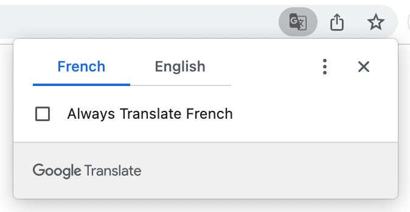
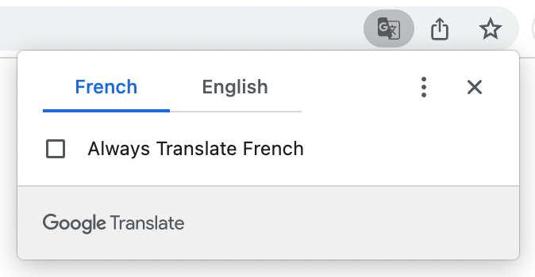

Traditou
Introduction
I've wanted to watch De Garde 24/7, Infoman, and many other French Canadian shows for a while now. The only problem is that my French is poor and watching French shows with only French subtitles and googling at the same time is not as enjoyable as it could be. I even sent an email to TeleQuebec asking if they would release English subtitles for De garde 24/7. The answer was no so I had to take the matter into my own hands.
How?
Traditou intercepts the original subtitle files sent from the website servers, parses them and displays the original subtitles along with English subtitles on the bottom, with Google translate.
Why Traditou?
This extension can be used with the trifecta of French Canadian streaming websites: Tou.tv, Noovo.ca, and TeleQuebec, with the goal of French language learning in mind.
Traditou not only matches words closely, it also transforms TV-style rolling captions (which are visually difficult to follow) into more readable streaming service style subtitles.
Tutorial
How to display both French and English subtitles:
- Right click to select "Translate to English" or use Chrome's built-in Google translate icon on the top right to translate the page to English
- Make sure Traditou is enabled.
- TODO: for Telequebec, click translate on the bottom
 

Display only English subtitles
Disable Traditou but leave Google's auto-translation enabled.
Display only French subtitles
Disable both Traditou and Google's auto-translation.
TODO: the styling of the subtitle boxes for macs are in accessibility settings, and have to restart chrome after. Add screenshots.FAQs
-
The show that I want to watch is not on Tou.tv, Noovo, or TeleQuebec, will you support the website that I watch too?
If you are looking for support for Netflix or Amazon Prime, there are a few Chrome extensions are already do that. If the website that you use is not any of the above, you can send me an email so I can add support for the website that you watch.
-
Having trouble accessing the video contents because you are outside of Canada?
You can use a VPN to change your IP address in order to access Canadian content.
-
I don't see any subtitles, what's wrong?
If the original video doesnt come with subtitles, no translated subtitles can be provided
-
I use Traditou to translate to a language that's not English?
Yes. As long as Google Translate supports that language.
-
The subtitles seem to flicker a lot. What should I do?
I recommend that you restart your browser.
To support my work, you can leave a 5-star review for Traditou, and/or buy me a coffee. To report bugs, please contact me.